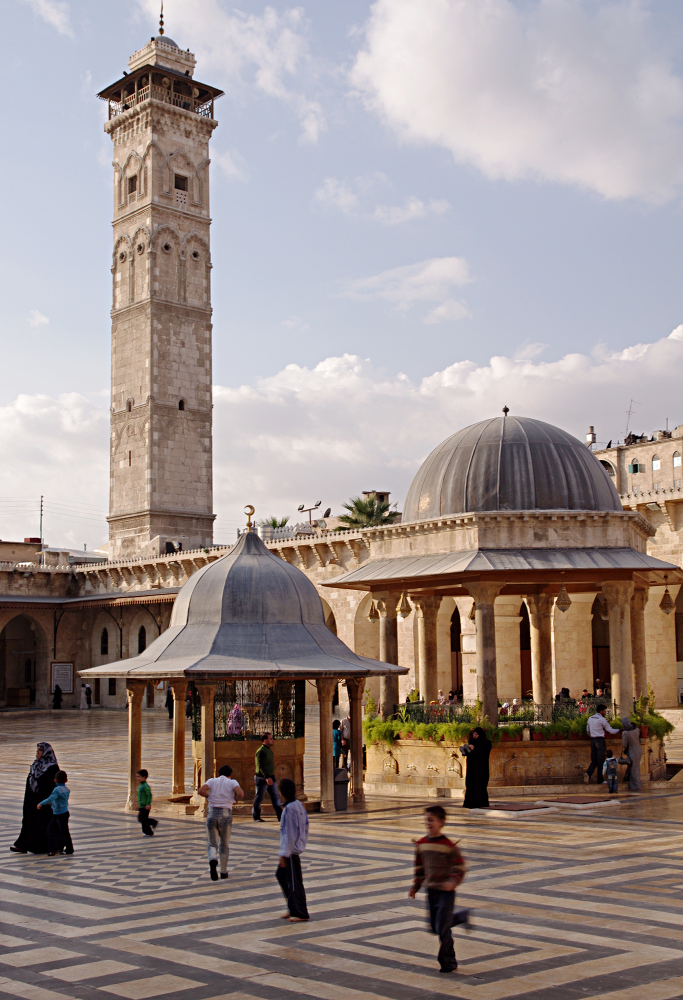
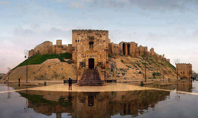
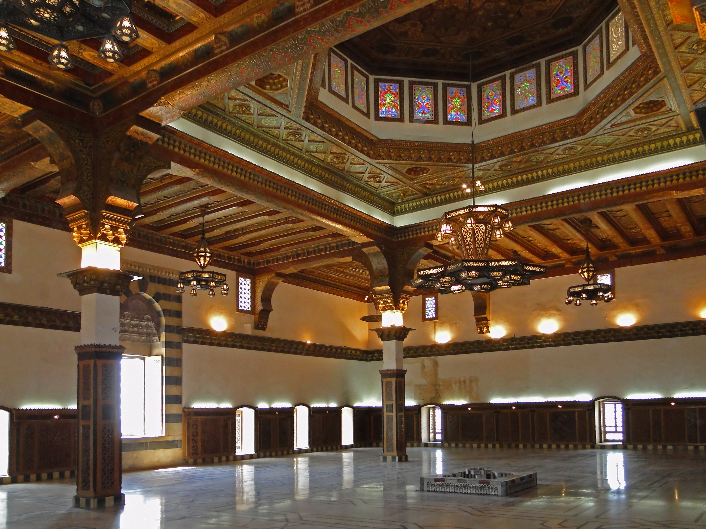
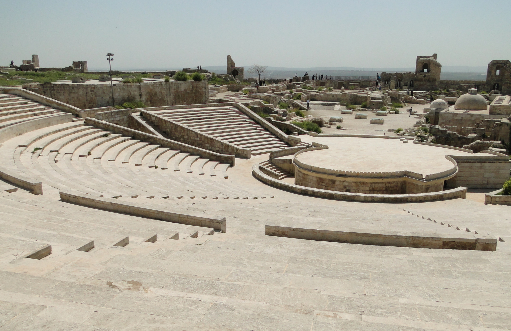
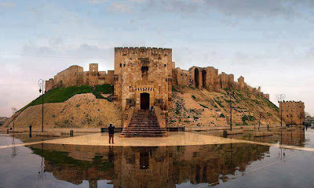
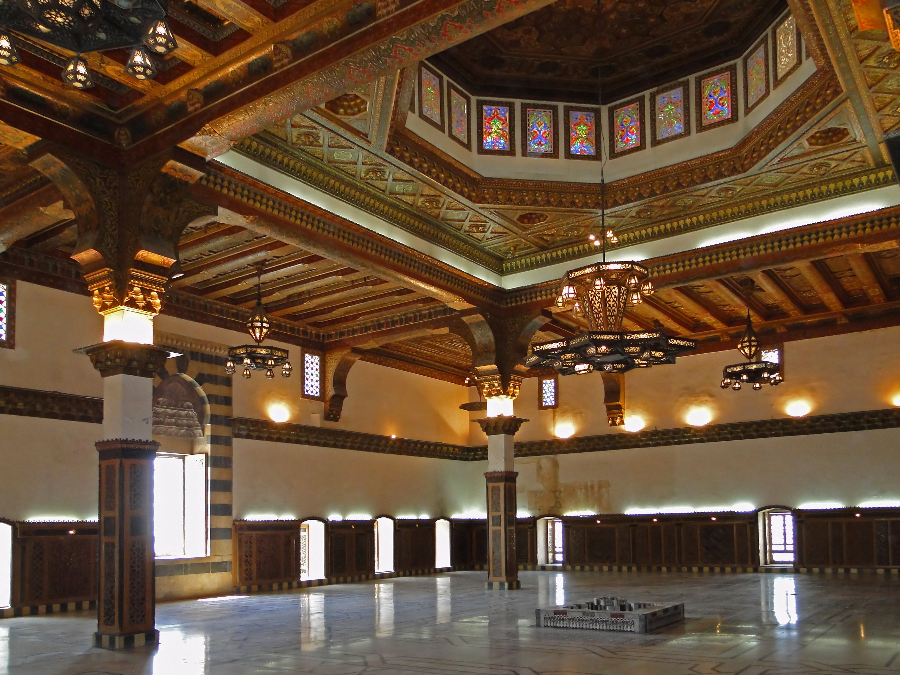
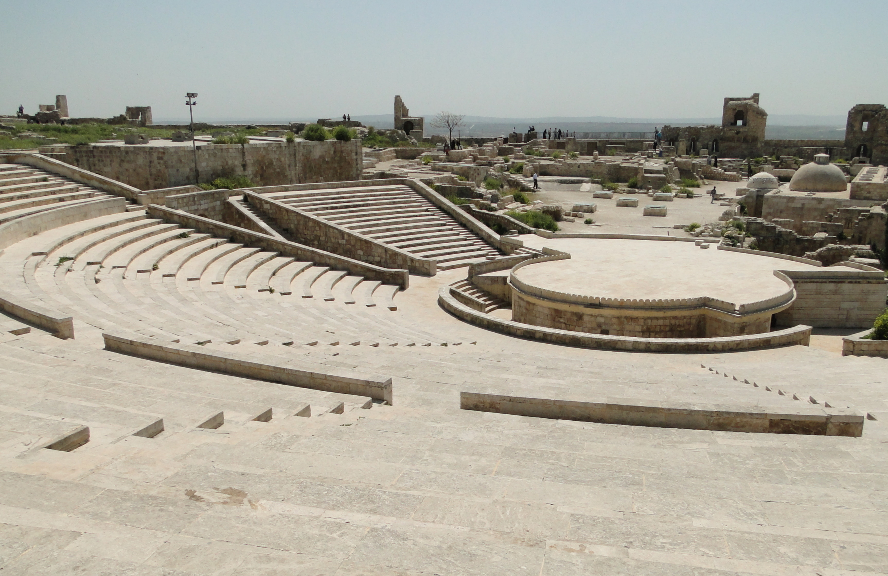

HALEP GENEL BAKIŞ
Halep Suriye'de bir şehirdir. Halep merkezinin 2007 nüfusu 1,7 milyon civarında olup,
Halep'e bağlı olan yerleşim yerleri ile toplam nüfusu 4.393.000 'dir.Halep Arapça'da ve diğer bazı Sami dillerinde süt veren demektir.
Halep ilinin de merkezidir.
Halep, Osmanlı İmparatorluğu'nun en önemli kentleri arasında yer almış, Türkçe deyimlere ve Türk edebiyatına yerleşmiştir.
"Halep oradaysa arşın burada" deyimi, Aşık Ömer'in "İşte geldim gidiyorum şen olasın Halep şehri" beyiti, Aşık Emrah'ın sevdiğini Halep'te araması,
Kerem'in Aslı'nın ateşine Halep'te yanıp kül olması bu meyanda sayılabilir.
Tarihi MÖ 3000'li yıllara uzanan Halep Kalesi'nde çeşitli Mezopotamya devletleri, Roma İmparatorluğu,
Bizans İmparatorluğu,Arap hakimiyeti, Emeviler, Abbasiler,Hamdaniler,Mirdasiler, Ukayliler çok kısa bir süreliğine Büyük Selçuklu Devleti ve Osmanlı İmparatorluğu devirleri yaşanmıştır.
I. Dünya Savaşı sonucunda Osmanlı İmparatorluğu'nun ortadan kalkmasından sonra bir müddet Fransızlarda kaldıktan sonra, Suriye Devleti kurulmuştur.
Suriye'nin sürekli ticaret ve üretim merkezlerinden biri olmuştur.
Osmanlı İmparatorluğu'nda Bursa ve İstanbul'dan sonraki en önemli dokumacılık merkezi Halep olmuştur.
İpekli dokumaları ve meşhur sabunları Halep'in en önemli ihraç malı olmuştur.
İstanbul'dan sonra ikinci en büyük ticaret merkezi ve altın çarşıları Halep'te olmuştur.
1500'lü yıllardan itibaren Venedikliler, İngilizler, Fransızlar ve Hollandalılar Halep'te konsolosluklar ve acenteler kurmuştur.
Osmanlı'da ilk mason locası da Halep'te kurulmuştur.
Osmanlı arşivlerinde yer alan hicri 1304 tarihli bir vesikada, Halep'te İngiliz konsolosu Handerson'un riyasetinde Mason Locası namıyla bir gizli
teşkilat kurulduğu bildirilmektedir. Arap harfleriyle ilk matbaa İstanbul'dan önce Halep'e uğramıştır.
detaylı bilgi...
HALEP KALESI
Halep Kalesi, kuzey Suriye'nin Halep şehrinde, kuvvetlendirilmiş büyük Orta Çağ sarayı.
Dünyanın en eski ve en büyük kalelerinden biri sayılır. Kale tepesinin kullanımı MÖ 3.000 yıllarına dayanır.
Sonradan Grek, Bizans, Eyyubi, Memluk ve Osmanlı medeniyetleri tarafından fethedilmiştir.
Yapının çoğu Eyyubi dönemine dayandığı düşünülmektedir.
2000'li yıllarda Aga Khan Trust for Culture ile Aleppo Archeological Society tarafından kapsamlı bir restore çalışması yapılmıştır.
Şehre hakim olan Kale, 1986'dan beri UNESCO Dünya Miras Listesindeki Antik Halep Şehri'nin parçasıdır
.Suriye İç Savaşı sırasında çatışmalardan etkilendi.2023 Kahramanmaraş depremlerinde kalenin bazı bölümleri hasar gördü.
detaylı bilgi...

Halep Ulu camii
Halep Ulu Cami ya da Halep Emevi Camii, Kuzey Suriye'nin Halep şehrindeki en büyük ve en eski camilerinden biridir.
El-Medine Sûk (çarşısı) girişine yakın, Dünya Miras Listesinde olan Halep Antik Şehri'n el-Callum mıntıkasındadır.
Caminin içinde Yahya'nın babası olan Zekeriya'nın türbesi mevcuttur.[1][2] Cami 8. yy.'ın başında inşa edilmiş;
ancak şimdiki bina 11. ila 14. yy.'a dayanmaktadır. Minare 1090 yılında inşa edilmiş,Nisan 2013'te Suriye İç
Savaşı çatışmaları esnasında içine yerleştirilen mühimmattan veya bir tank topundan dolayı patlayıp yıkılmıştır.
detaylı bilgi...
GEZILECEK YERLER
Caber Kalesi
Ya da Türk Mezarı Suriye sınırları içinde Fırat Nehri'nin sol kıyısında kalan, eski bir kaledir.
Süleyman Şah Türbesi'nin Caber kalesi eteklerinde yer alması nedeniyle 1921-1973 yılları arasında Türkiye'nin
toprağı olarak kalmıştır. Türbe'nin 1973 yılında Halep'in Karakozak köyüne taşınması ile bu statü sona ermiştir.
Türbenin muhafazasını sağlamakla görevli olan Jandarma İhtiram kıtasının ikameti için 30 Mayıs 1938 tarihinde
modern bir karakol yaptırıldı. 1939 yılında da eski türbe tamiri imkânsız hâle geldiği için tarihî önem ve
özelliğine uygun olarak karakolun yanında yeni bir türbe inşa ettirildi ve mezar buraya nakledildi.
Türkiye ile Suriye heyetleri arasında 1956 yılında Halep’te yapılan üst seviyede bir toplantıda düzenlenen
tutanağın 13 ve 14'ncü maddelerinde türbe için gönderilecek ihtiram kıtasının her ayın 7'sinde değiştirilmesi
kabul edilmiştir. 1973'te türbe ve onunla birlikte Türk karakolu yeni yerine taşınmış, Caber Kalesi terk edilmiştir.
detaylı bilgi...
KAPALI ÇARŞI
Halep'in eski ticaret yollarının, özellikle de İpek Yolu'nun kesiştiği noktada olması sayesinde, pazarları çok müreffehti ve hala...
Halep çarşılarının kökenleri M.Ö. 4. yüzyıla kadar gitmektedir, günümüzde Kale ile Antakya Kapısı arasında uzanan düz caddenin iki
yanında ticari dükkânlar kurulmuştur.Dikey ve paralel, otuz dokuz çarşı, yan yana yerleştirilse on beş kilometre uzunluğa ve 16
hektarlık bir alana ulaşacak olan ve birlikte dünyanın en uzun çatılı pazarlarını oluşturan Halepliler buna şehir pazarı diyor.
Pazar, her biri kendi adıyla anılan bir tür yiyecek satan gruplara dağılmış /1571/ ticari dükkanları içerir.
detaylı bilgi...
Hüsreviye Külliyesi
Hüsreviye Külliyesi Sahap Biza Mahallesi’nde ve Halep Kalesi’nin alt kısmındaki bir arsa üzerinde inşa edilen Hüsreviye Külliyesi’nde
bulunan tek kitabenin üzerindeki tarih 1546’dır. Külliye, İstanbul’da Mimarbaşı Koca Sinan tarafından tasarlanmış olup Sinan’ın Halep’e
gönderdiği çırakların biri tarafından inşa edilmiştir. Külliye; cami, medrese, misafirhane, mutfak, tekke ve ahırdan oluşmaktadır.
Cami ve medrese dışındaki yapılar zamanla yok olmuştur. Avlunun batısındaki sekiz küçük kubbeyle örtülü üç odadan oluşmuş yapı ise
külliyenin mutfağıdır. Toplam beş hektarlık bir alanı kaplayan külliyenin etrafı, merkezî bir bütünlük arz etmesi için parmaklıklar
ve alçak bir duvarla çevrilmiştir. Külliyenin çevresinde çeşitli dükkânlar da vardır.
Hüsreviye Külliyesi ile, klasik Osmanlı üslubunu Halep’e yerleştirmek amaçlanmıştır.
detaylı bilgi...
 




